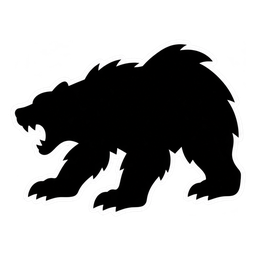

Bestiary ForeverA free bestiary addon for World of Warcraft: Forever. Target a creature and a small borderless window shows its level, health and the loot it can drop, with drop rates from ForeverDB.net and from your own kills.
Un addon bestiario gratuito para World of Warcraft: Forever. Selecciona una criatura y una ventana pequeña sin bordes te muestra su nivel, su vida y el botín que puede soltar, con porcentajes de ForeverDB.net y de tus propias muertes.
Illustration of the target frame and its expanded view.
Ilustración de la ventana del objetivo y su vista expandida.
3D portrait, name, level, elite/rare/boss, creature type and a live health bar, plus the top drops with their rates. Borderless, movable, out of your way.
Retrato 3D, nombre, nivel, élite/raro/jefe, tipo de criatura y barra de vida en tiempo real, más los drops principales con su porcentaje. Sin bordes, movible y discreta.
Click + for a rotatable 3D model and the full loot table. Hover any item to see every source side by side; shift-click to link it in chat.
Pulsa + para ver un modelo 3D que puedes girar y la tabla de botín completa. Pasa el ratón por un ítem para ver todas las fuentes; mayús+clic para enlazarlo en el chat.
Like a Pokédex, by continent, zone and dungeon. Undiscovered creatures are black silhouettes until you meet them. Open it with /bf or the book button.
Como una Pokédex, por continentes, zonas y mazmorras. Las criaturas sin descubrir son siluetas negras hasta que las encuentras. Ábrelo con /bf o el botón del libro.
Search any item in English or Spanish and see every creature that drops it, sorted by highest %, A-Z or zone.
Busca cualquier objeto en español o inglés y ve todas las criaturas que lo sueltan, ordenadas por mayor %, A-Z o zona.
Every zone has its own numbered list of creatures, ordered by level, with a counter of how many you have discovered. Creatures you haven't met yet show only their shape in black: you know something lives there, not what it is. Target it once and it's yours, with its 3D model, levels, rank, zones and its whole loot table.
Cada zona tiene su lista numerada de criaturas, ordenada por nivel, con un contador de cuántas has descubierto. Las que aún no has encontrado solo muestran su forma en negro: sabes que ahí vive algo, pero no qué es. Selecciónala una vez y queda en tu libro, con su modelo 3D, niveles, rango, zonas y toda su tabla de botín.
3,161 creatures in 50 zones and 47 dungeons and raids.
3.161 criaturas en 50 zonas y 47 mazmorras y bandas.
Illustration of a zone page in the bestiary.
Ilustración de una página de zona del bestiario.
Each item shows a best estimate and says where it comes from. The addon records every corpse you loot (once per corpse) and merges your rates with ForeverDB's.
Cada ítem muestra una estimación y dice de dónde sale. El addon registra cada cadáver que saqueas (una vez por cadáver) y combina tus porcentajes con los de ForeverDB.
| You / Tú | Your own rate, once you have looted 20+ corpses of that creature (/bf minkills to change it).Tu propio porcentaje, a partir de 20 cadáveres saqueados de esa criatura (se cambia con /bf minkills). |
| Forever | Rate measured in WoW Forever by ForeverDB.Porcentaje medido en WoW Forever por ForeverDB. |
| Classic* | Classic rate (CMaNGOS classic-db) used until a Forever one exists. It may differ in Forever.Porcentaje de Classic (CMaNGOS classic-db) mientras no haya uno de Forever. Puede variar en Forever. |
| You (n) / Tú (n) | Your own rate with few samples (n looted corpses).Tu porcentaje con pocas muestras (n cadáveres saqueados). |
| seen N / visto N | No rate yet: how many times ForeverDB players saw it drop.Aún sin porcentaje: cuántas veces lo vieron caer jugadores de ForeverDB. |
Current data: 3,161 creatures and 22,852 drops.
Datos actuales: 3.161 criaturas y 22.852 drops.
BestiaryForever-0.2.7.zip from Releases.BestiaryForever folder into World of Warcraft\_forever_\Interface\AddOns\./reload. Open the bestiary with /bf, or from the addon compartment next to the minimap.BestiaryForever-0.2.7.zip desde Releases.BestiaryForever en World of Warcraft\_forever_\Interface\AddOns\./reload. Abre el bestiario con /bf o desde el compartimento de addons junto al minimapa./bf frame · /bf lock · /bf reset · /bf minkills <n> · /bf about